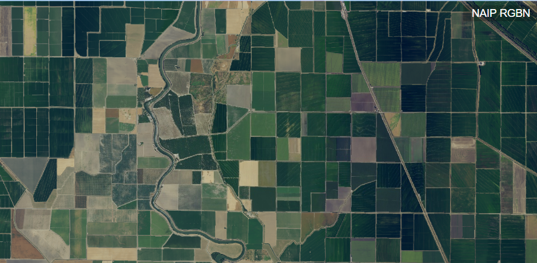
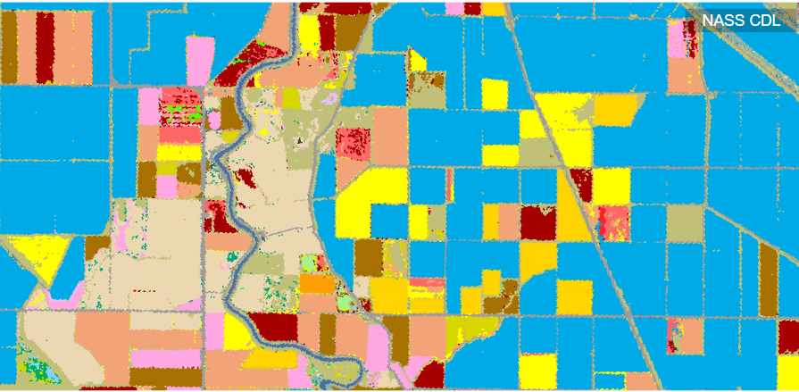
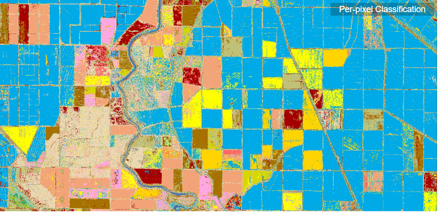
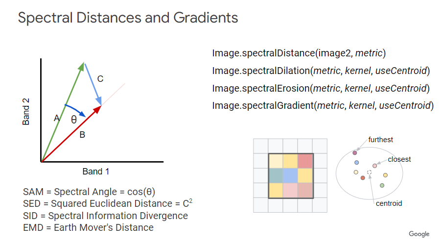
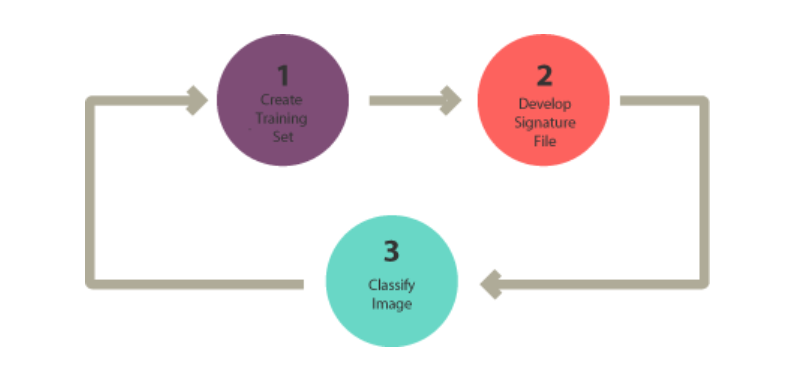
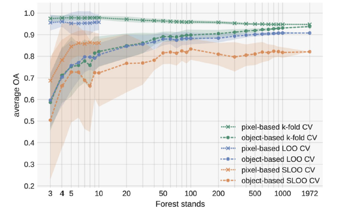

8 Week 7 - Classification- The Big Question
8.1 SUMMARY
There is some Pre-classified data which can be used where we don’t need to do the classification. For example Dynamic World Data which use SR for labelling but use TOA for the model. here we use Machine learning models like Convolution Neural Network. Accuracy is assessed through Confusion Matrix.
When we use such classified data we check that how was it trained. There are some issues like blobbiness as its a 50x50 m image.
OBJECT BASED IMAGE ANALYSIS (OBIA)
Here we talk about pixels and distance mainly Euclidian distance. OBIA is similarity between pixels. It tries to match the similar pixels. for example - Take a RGB near-infrared 1m image. Its a typical kind of image where we want to do segmentation and OBIA. we do OBIA to do clean classification. Like if we classify on the mean of all the vectors inside a particular polygon we will get a solid result as opposed to classifying on individual pixels we will get a lot salt and pepper noise.
There comes also a question why do we need object based analysis? It is to improve in signal and noise. There are thousand pixels here so we might want to turn these things into objects.
| Original Image to Classify | Different Crop Types | Per Pixel Classification |
|---|---|---|
|  |  |  |
Fig1: Process of Classification
We use mode reducer in neighborhood to clean the image. it will remove the single pixel outliers. we also talk about spectral gradient and can we use super-pixels to remove the salt and pepper noise.

Fig2: Spectral Gradient and Distances
SNIC- (Super pixel non-iterative clustering) Seeded region growing
This makes clusters without using k-means. It uses a regular grid of points (like k-means) but then assigns pixels to points through distance color and co-ordinates - it represents normalised spatial and color distances. we also have seed grid which denotes spacing in pixel. we can set square or hex grid.
Image.reduceConnectedComponents
(Simple Linear Iterative Clustering) Algorithm for Superpixel generation is the most common method regular points on the image work out spatial distance (from point to centre of pixel) = closeness to centre colour difference (RGB vs RGB to centre point) = homogenity of colours
The SLIC algorithm works iteratively, repeating the above process until it reaches the expected number of iterations.
sub pixel analysis/ spectral mixture analysis
Supervised Classification in Remote Sensing
In supervised classification, you select training samples and classify your image based on your chosen samples. Your training samples are key because they will determine which class each pixel inherits in your overall image.

Fig3: Classification and Validation(GISGeography 2016)
The good approach is to train and test split
This is simply holding back a % of the original data used to train the model to then test it at the end

Fig.4: Testing and Training the ML model
What do you think of spatial autocorrelation in this sense? Is OBIA is dealing with spatial autocorrelation?
In ML model if we use spatial data and they have not considered spatial autocorrelation between its training and testing data then its considered too good or overfitted. To solve this we do spatial cross validation
8.2 APPLICATION
The researchers lately have diverted themselves to a much simpler task of simplifying an image into a smaller cluster of pixels called super pixels than using traditional segmentation algorithms. Several applications such as object localization, multi-class segmentation, optical flow, body model estimation, object tracking, depth estimation took advantage of super pixels.
The algorithm to do this is Simple linear Iterative Clustering Algorithm(SLIC) but it has some limitations. It requires several iterations for the centroids to converge. It uses a distance map of the same size as the number of input pixels, which amounts to significant memory consumption for image stacks or video volumes. Lastly, SLIC enforces connectivity only as a post-processing step. So the better version of this is simple non-iterative clustering (SNIC). It is non-iterative, explicitly enforces connectivity, is computationally cheaper, uses lesser memory.(Achanta and Susstrunk 2017)
Spatial autocorrelation is inherent to remotely sensed data. nearby pixels are more similar than distant ones. The evaluation of classification accuracy has always been considered as an important issue in the remote sensing community. (Congalton 1991)
Despite the importance attached to the accuracy assessment protocol, a gap, sometimes a serious one, is often found between the performance metrics of a model and the real quality of the resulting map. This tends to reduce the confidence placed in accuracy statistics and to discredit the true capacity of remote sensing in the opinion of the t end users. Because of spatial autocorrelation, spectral values of close pixels are often more similar than those of distant ones, producing falsely high accuracy metrics if the sampling design is not used for testing. (Roberts et al. 2017)
From a statistical point of view, two problems can arise with spatial autocorrelation: (1) spatial non-independence of the classification errors (or model residuals) and (2) spatial non-independence of the training and test sets used for accuracy assessment.
The six cross-validation strategies with different sample sizes were applied to the department of Herault-34. The classification performances obtained by cross-validation on Herault-34 are given in Fig. 5. Overall, the results show that ignoring dependence between training and test sets leads to very high accuracy metrics whatever the sample size. This is particularly clear at the pixel level but also at the object level with large samples. Compared to sampling strategies that account for spatial autocorrelation, the accuracy metrics are overestimated. Our results revealed notable underestimation of generalization errors when traditional non spatial approaches were used to assess the accuracy. Pixel-based samplings were the most affected. Object-based strategies mitigate the effect of spatial dependence since the pixels used for training and testing never belong to the same forest stands. Nonetheless, non-spatial data-splitting at the object level also leads to overestimation of predictive performance. we need to change practices in classification accuracy assessment using spatial imagery. A data splitting design ensuring spatial independence between the training and test sets should be the standard approach for validation. (Karasiak et al. 2022)

Fig.5: Average Overall accuracy based on the RF classifier
8.3 REFLECTION
This week we discussed about object based image analysis i think is very important part of classification. The issues related to that and if for example we have spatial data then we always have spatial autocorrelation. They are kind of related . So we need to keep a check on that which can be resolved through spatial cross validation or object based image analysis. If we are using machine learning models for spatial data we need to take care of overfitting of data and how can we make the more generalized model which can be use for different imagery. this week also talks about lots of methods we discussed in GIS module like Moran’s I, K-means Clustering and GWR. So here we see the merge of Remote Sensing and GIS.